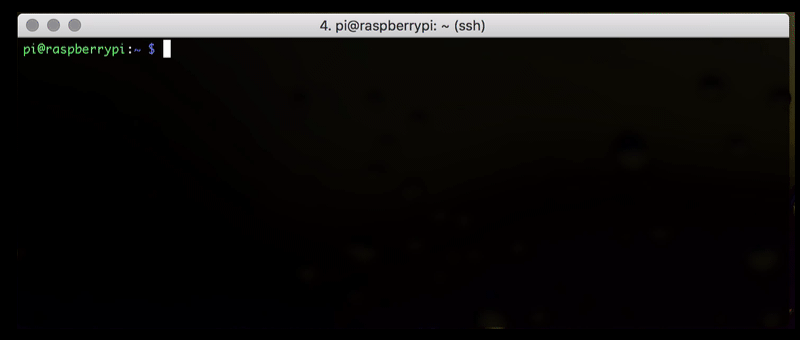
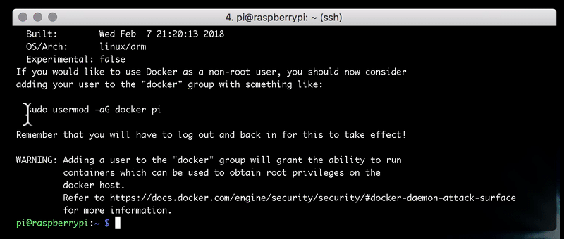
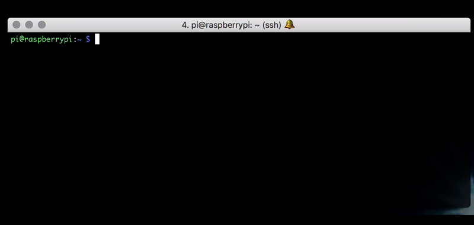
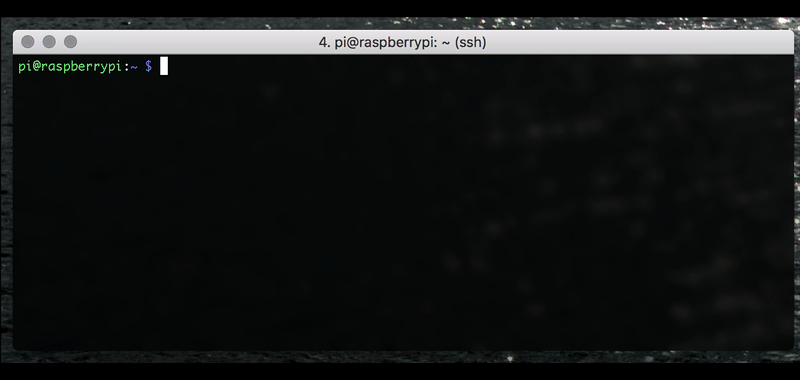
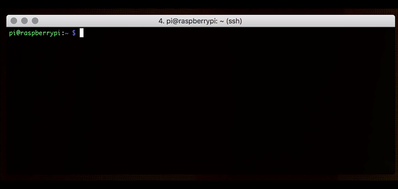
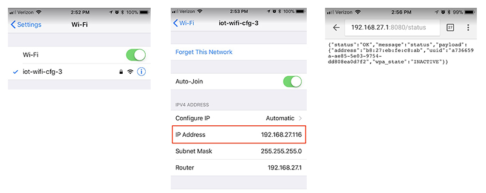
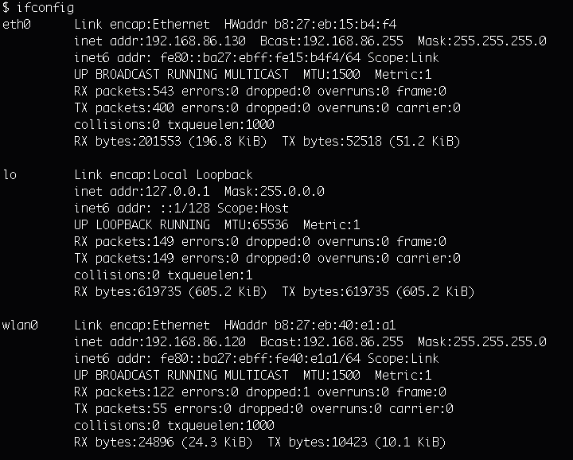
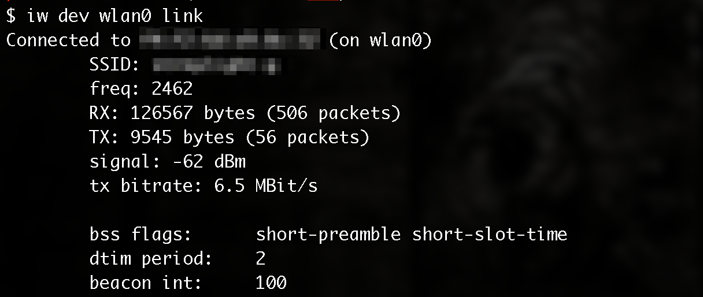
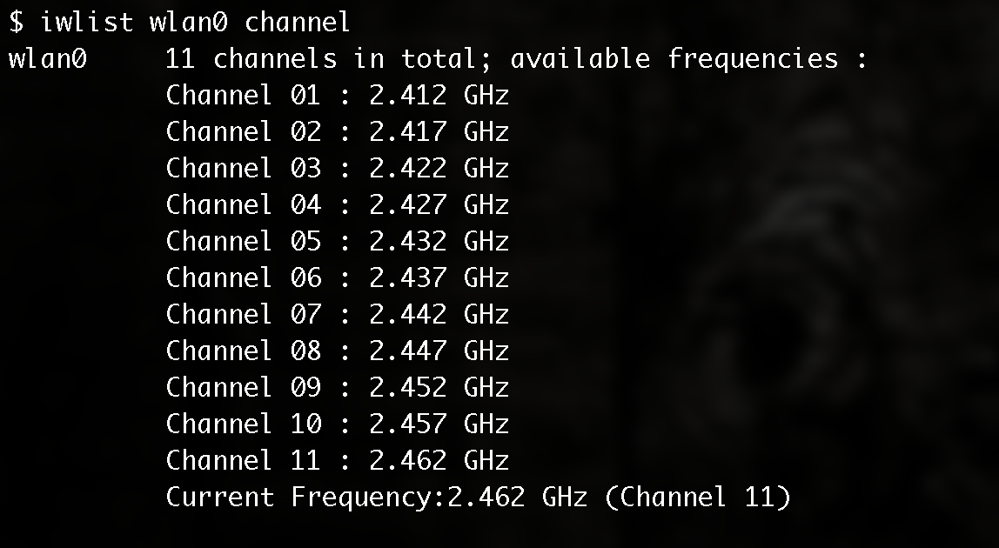

Update: Looking for contributors.
| Golang | Size | Pulls |
|---|---|---|
 |
 |
IOT Wifi is very small/8MB Docker Container built for the Raspberry Pi 3. IOT Wifi exposes a simple JSON based REST API for controlling the wireless network interface. This container allows the Raspberry Pi to accept wifi connections as an access point (aka AP) while at the same time connecting to an existing wifi network (station mode).
Go (Golang) was used to develop the main application code, to produce a minimal docker image with great performance. The container runs Alpine Linux with small, optimized versions of hostapd, wpa_supplicant and dnsmasq, controlled by the container’s API endpoints.
If you have a Raspberry Pi 3 and you want to provide wifi based configuration abilities, all you need is Docker installed and a little over 8MB of free drive space.
TL;DR? If you are not interested in reading all this, you can skip ahead to Getting Started.
IOT Wifi is a Raspberry Pi wifi management REST service written in Go and intended to run in a Docker container on a Raspberry Pi.
IOT Wifi sets up network interfaces, runs hostapd, wpa_supplicant and dnsmasq to run simultaneously, allowing a user (or another service) to connect to the Raspberry Pi via hostapd/dnsmasq and issue commands that configure and connect wpa_supplicant to another AP. IOT Wifi then exposes a small web server on the Pi and offers a JSON based REST API to configure Wifi. The IOT Wifi container allows you to build a custom Captive Portal web page or even programmatically connect from another device and use the exposed API to configure the target device.
Using wifi to configure a wifi connection is often a standard requirement for IOT. As Raspberry Pis are becoming a popular choice as an IOT platform, this helps solve the frequent need to manage AP and Station modes.
Background
Over a year ago I wrote a blog post called RASPBERRY PI 3 - WIFI STATION+AP with my notes on setting up a Raspberry Pi 3 to run as a Wifi Access Point (Hotspot) and a Wifi Client (aka Wifi Station) simultaneously. This old blog post gets a considerable amount of traffic, so it seems there is quite a bit of interest in this. I have come to realize that some of the steps in my old post have changed since newer versions of Raspian (n00bs build) are released.
Since writing the post, I have had a few personal and professional projects requiring a Raspberry Pi to allow wifi setup over wifi. I decided to open source this simple project to help others with similar requirements as well as gain some feedback on where and how I can improve it. I would welcome any contribution and credit any contributors.
IOT Wifi (Raspberry Pi AP + Client)
You will need a Raspberry Pi 3, running Raspian Stretch. You can use the Noobs release to install the latest version of Raspian.
Disable wpa_supplicant on Raspberry Pi
You do not want the default wpa_supplicant (the software that communicates with the wifi driver and connects to Wifi networks,) running and competing with the IOT Wifi container.
# prevent wpa_supplicant from starting on boot
$ sudo systemctl mask wpa_supplicant.service
# rename wpa_supplicant on the host to ensure that it is not
# used.
sudo mv /sbin/wpa_supplicant /sbin/no_wpa_supplicant
# kill any running processes named wpa_supplicant
$ sudo pkill wpa_supplicant
Install Docker on Raspberry Pi
Ssh into the Pi or use the terminal application from the desktop on the Pi to get a Bash shell.
# Docker install script
$ curl -sSL https://get.docker.com | sh

# add pi user to Docker user group
$ sudo usermod -aG docker pi

Reboot the Pi and test Docker.
$ sudo reboot
After reboot, ensure Docker is installed correctly by running a Hello World Docker container.
# run the Docker Hello World container and remove the container
# when finished (the --rm flag)
$ docker run --rm hello-world

Pull the IOT Wifi Docker Image
You can optionally clone and build the entire project, however, to get started quickly I’ll show you how to use a pre-built Docker Image. At only 16MB this little image contains everything you need. The image is based on Alpine Linux and contains hostapd, wpa_supplicant and dnsmasq, along with a compiled wifi management utility written in go, the source is found in this repository: https://github.com/cjimti/iotwifi.
# Pull the IOT Wifi Docker Image
$ docker pull cjimti/iotwifi

IOT Wifi Configuration
You will need a configuration JSON file. You can download a default as a template or just it unmodified for testing. You can mount the configuration file into the container or specify a location with an environment variable.
Use the default configuration file and location for testing:
# Download the default configuration file
$ wget https://raw.githubusercontent.com/cjimti/iotwifi/master/cfg/wificfg.json

The default configuration looks like this:
{
"dnsmasq_cfg": {
"address": "/#/192.168.27.1",
"dhcp_range": "192.168.27.100,192.168.27.150,1h",
"vendor_class": "set:device,IoT"
},
"host_apd_cfg": {
"ip": "192.168.27.1",
"ssid": "iot-wifi-cfg-3",
"wpa_passphrase":"iotwifipass",
"channel": "6"
},
"wpa_supplicant_cfg": {
"cfg_file": "/etc/wpa_supplicant/wpa_supplicant.conf"
}
}
You may want to change the ssid (AP/Hotspot Name) and the wpa_passphrase to something more appropriate to your needs. However, the defaults are fine for testing.
Run The IOT Wifi Docker Container
The following docker run command will create a running Docker container from
the cjimti/iotwifi Docker image we pulled in the steps above. The container needs to run in a privileged mode and have access to the host network (the
Raspberry Pi device) to configure and manage the network interfaces on
the Raspberry Pi. We will also need to mount the configuration file.
We will run it in the foreground to observe the startup process. If you want
it to run the background, you need to remove the --rm and pass the -d flag. If you want to it restart on reboot or failure, you can pass the flag
--restart=unless-stopped.
Read more on the docker run command.
$ docker run --rm --privileged --net host \
-v $(pwd)/wificfg.json:/cfg/wificfg.json \
cjimti/iotwifi
Optionally, you can also provide a wpa_supplicant.conf, like so:
$ docker run --rm --privileged --net host \
-v $(pwd)/wificfg.json:/cfg/wificfg.json \
-v <HOST_PATH>/wpa_supplicant.conf:<CONTAINER_PATH>/wpa_supplicant.conf \
cjimti/iotwifi
Where <CONTAINER_PATH> is the path to wpa_supplicant.conf specified in wificfg.json.
The IOT Wifi container outputs logs in the JSON format. While this makes them a bit more challenging to read, we can feed them directly (or indirectly) into tools like Elastic Search or other databases for alerting or analytics.
You should see some initial JSON objects with messages like Starting IoT Wifi...:
{"hostname":"raspberrypi","level":30,"msg":"Starting IoT Wifi...","name":"iotwifi","pid":0,"time":"2018-03-15T20:19:50.374Z","v":0}
Keeping the current terminal open, you can log in to another terminal and take a look the network interfaces on the Raspberry Pi.
# use ifconfig to view the network interfaces
$ ifconfig
You should see a new interface called uap0:
uap0: flags=4163<UP,BROADCAST,RUNNING,MULTICAST> mtu 1500
inet 192.168.27.1 netmask 255.255.255.0 broadcast 192.168.27.255
inet6 fe80::6e13:d169:b00b:c946 prefixlen 64 scopeid 0x20<link>
ether b8:27:eb:fe:c8:ab txqueuelen 1000 (Ethernet)
RX packets 111 bytes 8932 (8.7 KiB)
RX errors 0 dropped 0 overruns 0 frame 0
TX packets 182 bytes 24416 (23.8 KiB)
TX errors 0 dropped 0 overruns 0 carrier 0 collisions 0
The standard wifi interface wlan0 should be available, yet unconfigured since we have not yet connected to an external wifi network (access point).
wlan0: flags=4099<UP,BROADCAST,MULTICAST> mtu 1500
ether b8:27:eb:fe:c8:ab txqueuelen 1000 (Ethernet)
RX packets 0 bytes 0 (0.0 B)
RX errors 0 dropped 0 overruns 0 frame 0
TX packets 0 bytes 0 (0.0 B)
TX errors 0 dropped 0 overruns 0 carrier 0 collisions 0
Connect to the Pi over Wifi
On your laptop or phone, you should now see a Wifi Network named iot-wifi-cfg-3 assuming you did not change it from the default. The default password for this network is iotwifipass. Once connected to this network you should get an IP address assigned to the range specified in the config: 192.168.27.100,192.168.27.150,1h.

Once connected open a web browser and go to http://192.168.27.1:8080/status. You can access this API endpoint on the Raspberry Pi device itself from localhost*. On on Pi try the curl command curl http://localhost:8080/status.
You should receive a JSON message similar to the following:
{"status":"OK","message":"status","payload":{"address":"b8:27:eb:fe:c8:ab","uuid":"a736659a-ae85-5e03-9754-dd808ea0d7f2","wpa_state":"INACTIVE"}}
From now on I’ll demonstrate API calls to the new container with the curl command on the device. If you were developing a Captive Portal or configuration web page, you could translate these calls into Javascript and control the device Wifi with AJAX.
You can use my simple static web server IOT Web container for hosting a Captive Portal or configuration web page. See https://github.com/cjimti/iotweb.
To get a list of Wifi Networks the device can see, issue a call to the scan endpoint:
curl http://localhost:8080/scan
Connect the Pi to a Wifi Network
The device can connect to any network it can see. After running a network scan curl http://localhost:8080/scan you can choose a network and post the login credentials to IOT Web.
# post wifi credentials
$ curl -w "\n" -d '{"ssid":"home-network", "psk":"mystrongpassword"}' \
-H "Content-Type: application/json" \
-X POST localhost:8080/connect
You should get a JSON response message after a few seconds. If everything went well you will see something like the following:
{"status":"OK","message":"Connection","payload":{"ssid":"straylight-g","state":"COMPLETED","ip":"","message":""}}
You can get the status at any time with the following call to the status endpoint. Here is an example:
# get the wifi status
$ curl -w "\n" http://localhost:8080/status
Sample return JSON:
{"status":"OK","message":"status","payload":{"address":"b7:26:ab:fa:c9:a4","bssid":"50:3b:cb:c8:d3:cd","freq":"2437","group_cipher":"CCMP","id":"0","ip_address":"192.168.86.116","key_mgmt":"WPA2-PSK","mode":"station","p2p_device_address":"fa:27:eb:fe:c9:ab","pairwise_cipher":"CCMP","ssid":"straylight-g","uuid":"a736659a-ae85-5e03-9754-dd808ea0d7f2","wpa_state":"COMPLETED"}}
Check the network interface status
The wlan0 is now a client on a wifi network. In this case, it received the IP address 192.168.86.116. We can check the status of wlan0 with ifconfig*
# check the status of wlan0 (wireless interface)
$ ifconfig wlan0
Example return.
wlan0: flags=4163<UP,BROADCAST,RUNNING,MULTICAST> mtu 1500
inet 192.168.86.116 netmask 255.255.255.0 broadcast 192.168.86.255
inet6 fe80::9988:beab:290e:a6af prefixlen 64 scopeid 0x20<link>
ether b8:27:eb:fe:c8:ab txqueuelen 1000 (Ethernet)
RX packets 547 bytes 68641 (67.0 KiB)
RX errors 0 dropped 0 overruns 0 frame 0
TX packets 36 bytes 6025 (5.8 KiB)
TX errors 0 dropped 0 overruns 0 carrier 0 collisions 0
We can also check the connection by issuing a ping command from the device and specify the network interface to use:
# ping out from the wlan0 interface
$ ping -I wlan0 8.8.8.8
Hit Control-C to stop the ping and get calculations.
PING 8.8.8.8 (8.8.8.8) from 192.168.86.116 wlan0: 56(84) bytes of data.
64 bytes from 8.8.8.8: icmp_seq=1 ttl=57 time=20.9 ms
64 bytes from 8.8.8.8: icmp_seq=2 ttl=57 time=23.4 ms
64 bytes from 8.8.8.8: icmp_seq=3 ttl=57 time=16.0 ms
^C
--- 8.8.8.8 ping statistics ---
3 packets transmitted, 3 received, 0% packet loss, time 2002ms
rtt min/avg/max/mdev = 16.075/20.138/23.422/3.049 ms
Conclusion
Wrapping the all complexity of wifi management into a small Docker container, accessible over a web-based REST API reduces the dependencies on the device to only require Docker.
There are many ways to handle security using middleware or IP tables. A separate container can also manage security.
Check out the project IOT Web to get started with tiny a static web container suitable for building user interfaces for wifi management or captive portals.
Submit a Github issue or pull request if there are features or bug fixes you would like added to the project.
Legacy Instructions (the manual way)
Running the Raspberry Pi 3 as a Wifi client (station) and access point (ap) from the single built-in wifi.
Overview
We will be editing the following files:
- WPA configuration /etc/wpa_supplicant/wpa_supplicant.conf
- Network interfaces /etc/network/interfaces
- Hostapd config /etc/hostapd/hostapd.conf
- Hostapd default /etc/default/hostapd
- AP startup script /usr/local/bin/hostapdstart
- DNS /etc/dnsmasq.conf
- Startup script /etc/rc.local
Station Setup
The following will configure the Pi to access a wifi network as a client (station).
Create the wpa_supplicant configuration:
sudo vi /etc/wpa_supplicant/wpa_supplicant.conf
Add and customize the following:
Network Interfaces
Edit the interfaces configuration:
sudo vi /etc/network/interfaces
The entire configuration file should look like the following:
The uap0 interface will be used later on for our Access Point (AP).
Reboot the Pi:
sudo reboot
After the Pi boots up run the following command to check the status of the the wlan0 interface:
ifconfig
You should see wlan0 has received an ip address from the network it connected to:

Use iw to check the wireless status of wlan0.
iw dev wlan0 link
You see the SSId of the network you are connected to like this:

AP Setup
sudo apt-get install hostapd dnsmasq
Create a new hostapd configuration:
sudo vi /etc/hostapd/hostapd.conf
The new configuration should look like this:
Of course you will want to customize a few things like the ssid and passphrase (wpa_passphrase). You will also want to determine the best channel by looking at the channel wlan0 is currently using.
iwlist wlan0 channel
In this example output the Pi is using Channel 11:

Next you will need to modify the hostapd default configuration to use your new configuration file:
sudo vi /etc/default/hostapd
Add the following line:
DAEMON_CONF="/etc/hostapd/hostapd.conf"
Next we need to make a script to set the interface to AP mode, start hostapd and set some iptables configuration.
sudo vi /usr/local/bin/hostapdstart
Add the following lines to this new script.
Update permissions on the new hostap start script.
chmod 775 /usr/local/bin/hostapdstart
DNS Setup
We need the new AP to hand out IP addresses to our clients. Configure dnsmasq by editing the following.
sudo vi /etc/dnsmasq.conf
The configration should look like the following.
Start dnsmasq with the following.
sudo service dnsmasq start
Startup
Edit the rc.local script to run hostapdstart on boot up.
sudo vi /etc/rc.local
Add the following line.
/bin/bash /usr/local/bin/hostapdstart
Reboot the the Pi
sudo reboot
Raspberry Pi Wifi links
- Thanks to the Raspberry Pi forum thread “Pi 3 as wiireless client and wireless AP?”
- Adafruit’s excelent tutorial on “Setting up a Raspberry Pi as a WiFi access point”
- Automatically connect a Raspberry Pi to a Wifi network
Wifi and Networking
This blog post, titled: "Raspberry Pi 3 - WiFi Station+AP: IOT hotspot based configuration API." by Craig Johnston, is licensed under a Creative Commons Attribution 4.0 International License.